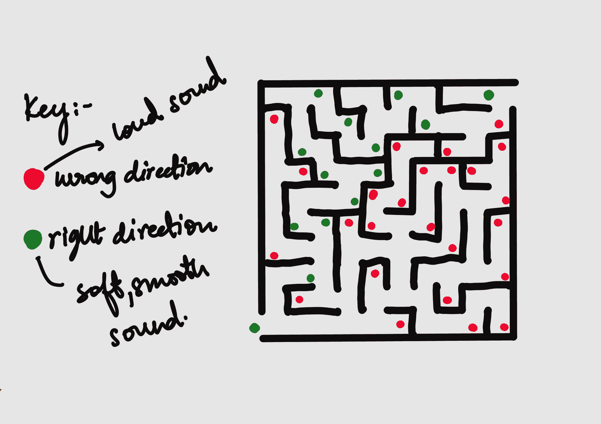
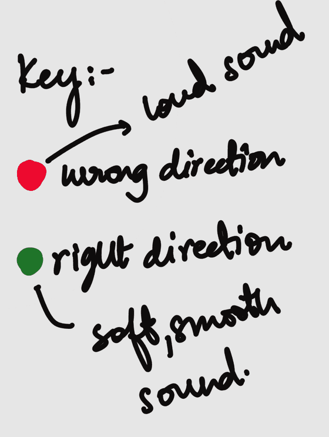

साउंड मेज़
भूलभुलैया का एक खेल, जिसे आवाज़ और स्पर्श के सहारे पार किया जाता है। परिशा का डिज़ाइन छूकर समझी जाने वाली एक भूलभुलैया और एक गोटी को आवाज़ों की एक भाषा से जोड़ता है। इस साइट पर दिया गया डेमो इसका आवाज़ वाला हिस्सा है, जो ब्राउज़र में खेला जाता है।
भूलभुलैया खेलिए आवाज़ें सुनिए कीबोर्ड से खेला जाता है। हेडफ़ोन से मदद मिलती है, पर स्पीकर पर भी खेल सकते हैं।

विचार
साउंड मेज़ कई इंद्रियों से खेला जाने वाला, रास्ता ढूँढने का खेल है। इसमें खिलाड़ी को आँखों पर निर्भर हुए बिना एक ठोस जगह को समझना और उसमें रास्ता ढूँढना होता है। यह खेल इस बात की पड़ताल करता है कि आवाज़, स्पर्श और जगहों की याद मिलकर किसी जगह की समझ कैसे बना सकते हैं।
खिलाड़ी एक असली गोटी को छूकर समझी जाने वाली भूलभुलैया या ग्रिड पर आगे बढ़ाता है। रास्ते की जानकारी साउंड मैपिंग से मिलती है, यानी अलग-अलग आवाज़ें जगह से जुड़े अलग-अलग निर्देश देती हैं, जैसे दिशा, आगे बढ़ना, रुकावटें, दूरी और मंज़िल। खिलाड़ी को सुनना, मतलब समझना, याद रखना और छूकर भूलभुलैया में रास्ता ढूँढना होता है।
यह खेल खिलाड़ियों को अपनी आवाज़ों की भाषा धीरे-धीरे सिखाता है। ऊँचा सुर एक दिशा बता सकता है, नीचा सुर दूसरी, और सुरों के मेल, लय या सुर में बदलाव से मोड़, रुकावटें या आगे बढ़ना बताया जा सकता है। जैसे-जैसे लेवल आगे बढ़ते हैं, खिलाड़ियों को आवाज़ों के और पेचीदा क्रम याद रखने पड़ते हैं और उन्हें असली चाल में बदलना पड़ता है।
स्पर्श जगह को एक ठोस रूप देता है। छूकर समझी जाने वाली भूलभुलैया में खिलाड़ी रास्ते, किनारे, बनावट और रुकावटें महसूस करते हैं। खेल के ज़्यादा विकसित रूपों में कंपन, तापमान, हवा का बहाव या गंध भी इस्तेमाल हो सकती है।
खिलाड़ी का लक्ष्य भूलभुलैया के आख़िर तक पहुँचना है। प्रोजेक्ट का लक्ष्य यह समझना है कि जब देखकर मिलने वाली जानकारी हटा दी जाए, तब लोग मन में नक्शा कैसे बनाते हैं।
शोध का सवाल
कई इंद्रियों से खेले जाने वाले खेल में, साउंड मैपिंग और स्पर्श से मिलने वाली जानकारी के ज़रिए जगह, दिशा और रास्ते की समझ कैसे दी जा सकती है?
उद्देश्य
- जगह की जानकारी देने के ज़रिए के तौर पर आवाज़ को परखना।
- समझना कि लोग सुनाई देने वाले संकेतों का मतलब कैसे निकालते हैं और उन्हें कैसे याद रखते हैं।
- स्पर्श पर आधारित एक ऐसा सिस्टम बनाना, जो आवाज़ के सहारे रास्ता ढूँढने में साथ दे।
- सिर्फ़ काम के लिए बने ऐक्सेसिबिलिटी टूल के बजाय एक दिलचस्प खेल बनाना।
- परखना कि नज़र का सहारा हटने पर जगह की समझ, याददाश्त और फ़ैसले लेने का तरीका कैसे बदलता है।
- ऐसा खेल डिज़ाइन करना, जिसे दृष्टिबाधित और देख सकने वाले, दोनों तरह के खिलाड़ी खेल सकें।
किनके लिए
18 से 35 साल के लोग।
दृष्टिबाधित लोग, जो इतने बड़े हों कि हाथ से खेला जाने वाला कोई खेल समझ सकें और ख़ुद खेल सकें।
सात प्रतिभागी
परिशा ने 18 से 30 साल के सात लोगों का इंटरव्यू लिया। सभी दृष्टिहीन या दृष्टिबाधित हैं।
मायशा 18 साल
उन्हें एक दुर्लभ आनुवंशिक स्थिति है, जिसमें शरीर पर्याप्त मेलेनिन नहीं बना पाता। मेलेनिन वह प्राकृतिक रसायन है जो त्वचा, बालों और आँखों को रंग देता है। उनकी दृष्टि 45% है।
श्रुति 20 साल
उनकी दृष्टि कम है। वे रोशनी, आकार और बड़ी चीज़ें पहचान पाती हैं, पर छोटी बारीकियाँ देखने और अनजान जगहों में रास्ता ढूँढने में उन्हें दिक्कत होती है। नई जगहों में चलते हुए वे स्पर्श, आसपास की आवाज़ों और याददाश्त, तीनों का सहारा लेती हैं। उन्हें इंटरैक्टिव गतिविधियाँ पसंद हैं और नए सिस्टम सीखने में वे सहज हैं।
रोहन 23 साल
उनकी दृष्टि बहुत कम है और वे मुख्य रूप से सुनकर और छूकर मिलने वाली जानकारी पर निर्भर रहते हैं। रास्ता ढूँढने के लिए वे छड़ी इस्तेमाल करते हैं, और आसपास की आवाज़ों पर उनका ख़ास ध्यान रहता है, जैसे ट्रैफ़िक, कदमों की आहट, लोगों की आवाज़ें और गूँज। उन्हें ऑडियो गेम खेलने का अनुभव है और ऐसी गतिविधियाँ पसंद हैं जिनमें कोई समस्या सुलझानी हो।
वेदांत 21 साल
रोज़मर्रा के कामों के लिए उनकी दृष्टि सीमित है, और अनजान जगहों में वे काफ़ी हद तक स्पर्श और आवाज़ पर निर्भर रहते हैं। जगहों को वे किसी देखे हुए नक्शे की तरह नहीं, बल्कि चलने-मुड़ने के क्रम की तरह याद रखते हैं। उन्हें टेक्नोलॉजी और गेम में दिलचस्पी है, और यह परखने के लिए वे सही रहेंगे कि आवाज़ों की नई भाषा कितनी आसानी से सीखी जा सकती है।
अर्जुन 24 साल
वे दृष्टिहीन हैं और जानी-पहचानी और अनजान, दोनों तरह की जगहों में ख़ुद रास्ता ढूँढते हैं। इसके लिए वे छड़ी, सुनाई देने वाले संकेतों और छूकर पहचानी जाने वाली निशानियों का इस्तेमाल करते हैं। रास्ते वे क्रम और ठोस निशानियों के सहारे याद रखते हैं। उन्हें ऐसे गेम पसंद हैं जिनमें रणनीति बनानी हो और फ़ैसले लेने हों, जहाँ बस निर्देश मानने भर का काम न हो।
सुद्धा 30 साल
उनकी दृष्टि आंशिक है। वे रोशनी, रंग और मोटे-मोटे आकार पहचान लेती हैं, पर बारीक चीज़ें भरोसे के साथ नहीं पहचान पातीं। अपनी बची हुई दृष्टि के साथ वे अक्सर आवाज़ और स्पर्श का सहारा भी लेती हैं। उन्हें दूसरों के साथ मिलकर खेले जाने वाले खेल और याददाश्त वाली गतिविधियाँ पसंद हैं, और साउंड मेज़ के मनोरंजन वाले पहलू पर वे काम की राय दे सकती हैं।
देवम 21 साल
उनकी दृष्टि बहुत कम है और रास्ता ढूँढने के लिए वे मुख्य रूप से सुनकर, छूकर और आसपास के माहौल से मिलने वाले संकेतों का इस्तेमाल करते हैं। आवाज़ किस दिशा से और कहाँ से आ रही है, यह पहचानने में और महसूस की जा सकने वाली निशानियाँ याद रखने में वे ख़ास तौर पर सहज हैं। उन्हें ऐक्सेसिबिलिटी पर केंद्रित टेक्नोलॉजी इस्तेमाल करने का अनुभव है, और वे विस्तार से बता सकते हैं कि खेल की आवाज़ों का सिस्टम आसानी से समझ आता है या ज़रूरत से ज़्यादा उलझा हुआ लगता है।
इंटरव्यू में मिले जवाब
सात में से छह प्रतिभागियों के जवाब, परिशा के छह सवालों के हिसाब से। जवाब परिशा के इंटरव्यू के लिखित रिकॉर्ड से लिए गए हैं। श्रुति के जवाब उस रिकॉर्ड में नहीं हैं।
ये जवाब परिशा के इंटरव्यू के अंग्रेज़ी लिखित रिकॉर्ड से हिंदी में अनुवाद किए गए हैं। अनुवाद में बात का मतलब वही रखा गया है, पर शब्द हूबहू नहीं हैं। मूल शब्द अंग्रेज़ी पेज पर हैं।
किसी अनजान जगह में आप आमतौर पर रास्ता कैसे ढूँढते हैं, या उस जगह को कैसे समझते हैं?
मैं आमतौर पर आसपास की आवाज़ों और उन निशानियों पर निर्भर रहती हूँ जो मुझे याद रह जाती हैं। आवाज़ें कहाँ से आ रही हैं, इस पर ध्यान देकर और कदम या मोड़ गिनकर मैं समझने की कोशिश करती हूँ कि कोई जगह किस दिशा में है।
मायशा
पहले मैं दिशाओं के सहारे यह समझने की कोशिश करता हूँ कि क्या कहाँ है, फिर कुछ ख़ास जगहें याद रखता हूँ। आसपास क्या है, यह समझने के लिए मैं अपनी छड़ी का भी इस्तेमाल करता हूँ।
रोहन
आसपास क्या हो रहा है, वह मैं सुनता हूँ और दिमाग़ में उस जगह का एक अंदाज़ा बनाने की कोशिश करता हूँ। चीज़ें और किनारे कहाँ हैं, यह समझने के लिए मैं छूकर भी देखता हूँ।
वेदांत
आमतौर पर पहले मैं धीरे-धीरे उस जगह में घूमकर उसे जानता हूँ। आसपास का माहौल समझने के लिए मैं अपनी छड़ी इस्तेमाल करता हूँ और आसपास की आवाज़ें सुनता हूँ।
अर्जुन
जो सुनती हूँ और छूकर महसूस करती हूँ, उसके हिसाब से मैं मन में एक तस्वीर बनाने की कोशिश करती हूँ। कभी-कभी मैं कदम गिनकर दूरियाँ भी याद रखती हूँ।
सुद्धा
मैं छड़ी, आवाज़ और याददाश्त, तीनों को मिलाकर इस्तेमाल करता हूँ। पहले मैं मोटे तौर पर दिशा समझने की कोशिश करता हूँ, फिर छोटी-छोटी बातों पर ध्यान देता हूँ।
देवम
किस तरह की आवाज़ें या आसपास के संकेत आपको यह समझने में मदद करते हैं कि आप कहाँ हैं या आपको कहाँ जाना है?
ट्रैफ़िक, लोगों की बातचीत, दरवाज़े खुलने की आवाज़, कदमों की आहट और आसपास के शोर में बदलाव, ये सब मदद करते हैं। कभी-कभी मैं सिर्फ़ आवाज़ से बता सकती हूँ कि मैं किसी सड़क के पास हूँ या किसी खुली जगह में।
मायशा
गूँज काम आती है। अगर मैं किसी बड़ी खुली जगह में हूँ, तो आवाज़ छोटे कमरे के मुकाबले अलग लगती है। लोगों की आवाज़ें और ट्रैफ़िक भी अच्छे संकेत हैं।
रोहन
लोगों की आवाज़ें शायद सबसे ज़्यादा काम आती हैं, क्योंकि उनसे मुझे पता चलता है कि लोग कहाँ हैं। बाहर ट्रैफ़िक की आवाज़ें भी बहुत ज़रूरी होती हैं।
वेदांत
जो आवाज़ें लगातार एक जैसी रहती हैं, वे मदद करती हैं। जैसे, कोई पंखा, सड़क, सीढ़ियाँ या किसी इंसान की आवाज़ एक निशानी बन सकती है।
अर्जुन
अलग-अलग आवाज़ों से मुझे अलग-अलग माहौल समझ आता है। जैसे, ट्रैफ़िक और हॉर्न की वजह से मैं भीड़-भाड़ वाली सड़क पहचान लेती हूँ।
सुद्धा
जिन आवाज़ों की दिशा साफ़ हो, वे काम आती हैं। आमतौर पर मैं बता सकता हूँ कि कोई चीज़ बाईं ओर से आ रही है या दाईं ओर से, ख़ासकर अगर वह पास हो।
देवम
आप कोई रास्ता, या किसी जगह में क्या कहाँ है, यह कैसे याद रखते हैं?
मैं उसे टुकड़ों में याद रखती हूँ, जैसे: सीधे, बाएँ मुड़ो, सीढ़ियाँ, फिर एक और मोड़। मुझे वह पूरे नक्शे की तरह याद नहीं रहता।
मायशा
मैं याद रखता हूँ कि कितने मोड़ हैं और कौन-सी जगहें ज़रूरी हैं। जैसे, कुछ देर सीधे चलो, एक दरवाज़े के बाद दाएँ मुड़ो और फिर सीढ़ियाँ आती हैं।
रोहन
मैं रास्तों को एक क्रम की तरह याद रखता हूँ। मैं उन्हें तस्वीर की तरह नहीं सोचता। यह कुछ-कुछ निर्देश याद रखने जैसा है।
वेदांत
मैं हर एक मोड़ नहीं, बल्कि ज़रूरी निशानियाँ याद रखता हूँ। अगर बहुत ज़्यादा मोड़ हों, तो मुझे वह रास्ता दोहराना पड़ता है।
अर्जुन
मैं उसे एक कहानी या क्रम की तरह याद रखती हूँ: पहले यह होता है, फिर मैं मुड़ती हूँ, फिर कोई ख़ास आवाज़ या चीज़ आती है।
सुद्धा
मैं चलने-मुड़ने का क्रम और कुछ ऐसी निशानियाँ याद रखता हूँ जिन्हें महसूस किया जा सके। अगर किसी जगह की आवाज़ या बनावट अलग-सी हो, तो उसे याद रखना आसान हो जाता है।
देवम
आसपास की चीज़ों को छूकर समझते समय, किस तरह की बनावट या आकार में फ़र्क करना आपके लिए सबसे आसान होता है?
ऐसी बनावटें जो एक-दूसरे से बहुत अलग हों। जैसे, चिकनी सतह और खुरदुरी सतह आसानी से पहचान में आ जाती हैं। छोटे-छोटे फ़र्क उलझन में डाल सकते हैं।
मायशा
उभरे हुए आकार और साफ़ पैटर्न सबसे आसान होते हैं। अगर दो बनावटें बहुत मिलती-जुलती हों, तो मैं उनमें जल्दी फ़र्क नहीं कर पाऊँगा।
रोहन
जिन आकारों में साफ़-साफ़ फ़र्क हो, वे आसान होते हैं। उभरी हुई लकीरें, बिंदु और खाँचे समझना काफ़ी आसान है।
वेदांत
सीधे-सादे उभरे हुए पैटर्न सबसे आसान होते हैं। कोई लकीर, गोला या बिंदु काफ़ी जल्दी पहचान में आ जाते हैं।
अर्जुन
बनावट में बड़ा फ़र्क हो तो सबसे अच्छा रहता है। मुझे ऐसे पैटर्न पसंद हैं जो तुरंत पहचान में आ जाएँ, जिनके लिए देर तक ध्यान लगाकर न बैठना पड़े।
सुद्धा
उभरी हुई लकीरें और अलग-अलग आकार आसान होते हैं। मुझे लगता है कि किसी गेम के लिए छूकर महसूस होने वाला ग्रिड अच्छा रहेगा, क्योंकि उससे समझ आता है कि किनारे कहाँ हैं।
देवम
क्या आपने ऐसे गेम खेले हैं जो मुख्य रूप से आवाज़ या छूने पर टिके हों? उनमें आपको क्या अच्छा लगा और क्या नहीं?
मैंने कुछ ऑडियो गेम खेले हैं। मुझे अच्छा लगता है जब आवाज़ें साफ़ हों और एक साथ बहुत सारी चीज़ें न हो रही हों। अगर बहुत ज़्यादा आवाज़ें हों, तो समझना मुश्किल हो जाता है कि ज़रूरी क्या है।
मायशा
हाँ, ज़्यादातर ऑडियो गेम। मुझे ऐसे गेम पसंद हैं जिनमें आवाज़ सिर्फ़ बैकग्राउंड म्यूज़िक न हो, बल्कि सच में उससे तय हो कि आपको क्या करना है।
रोहन
मैंने कुछ ऑडियो गेम आज़माए हैं। मुझे उनकी चुनौती अच्छी लगी, पर कभी-कभी आवाज़ें बहुत मिलती-जुलती थीं और मैं समझ नहीं पाता था कि उनका मतलब क्या है।
वेदांत
मैंने ऑडियो गेम खेले हैं। मुझे ऐसे गेम में मज़ा आता है जिनमें सिर्फ़ निर्देश मानने के बजाय मुझे ख़ुद कुछ पता लगाना पड़े।
अर्जुन
ज़्यादा नहीं। मुझे लगता है कि अगर गेम आवाज़ को सिर्फ़ निर्देश देने के लिए नहीं, बल्कि असली खेल के हिस्से की तरह इस्तेमाल करे, तो दिलचस्प होगा।
सुद्धा
मैंने कुछ ऑडियो गेम खेले हैं। सबसे अच्छे वे होते हैं जिनमें ध्यान से सुनना पड़ता है और फ़ैसले लेने पड़ते हैं। अगर आवाज़ सिर्फ़ निर्देश दे रही हो, तो गेम बोरिंग हो जाता है।
देवम
अगर आप बिना देखे खेला जाने वाला कोई गेम डिज़ाइन कर पाते, तो कौन-सी बातें उसे मज़ेदार और समझने में आसान बनातीं?
उसे सीखना आसान होना चाहिए, पर आगे चलकर वह मुश्किल होता जाए। मैं यह भी चाहूँगी कि हर आवाज़ का एक साफ़ मतलब हो जो मुझे याद रह सके।
मायशा
मुझे लगता है कि आवाज़ों का एक साफ़ सिस्टम होना चाहिए। एक बार समझ आ जाए कि हर आवाज़ का क्या मतलब है, तो मुझे बार-बार निर्देशों की ज़रूरत के बिना खेल पाना चाहिए।
रोहन
वह असली गेम जैसा लगना चाहिए, ऐक्सेसिबिलिटी की किसी एक्सरसाइज़ जैसा नहीं। उसमें कुछ चुनौती होनी चाहिए और शायद अलग-अलग लेवल भी।
वेदांत
मैं चाहूँगा कि गेम मुझे इतनी जानकारी दे कि मैं अपने फ़ैसले ख़ुद ले सकूँ। उसे हर बार ठीक-ठीक यह नहीं बताना चाहिए कि मुझे क्या करना है।
अर्जुन
उसमें अलग-अलग लेवल होने चाहिए और शायद स्कोर भी। मुझे लगता है कि मुकाबले से वह और रोमांचक बन सकता है।
सुद्धा
मैं आवाज़ को ही मुख्य चुनौती बनाता। आपको आवाज़ें याद रखनी पड़ें और ख़ुद समझना पड़े कि उनका क्या मतलब है, न कि बस यह बताया जाए कि कहाँ जाना है।
देवम
इंटरव्यू से क्या पता चला
आवाज़ निर्देश होने के साथ-साथ जगह की निशानी भी बन सकती है। अपने आसपास को समझने और किसी जगह में यह जानने के लिए कि वे कहाँ हैं, प्रतिभागी पहले से ही आसपास की आवाज़ों पर निर्भर रहते हैं, जैसे कदमों की आहट, लोगों की आवाज़ें, ट्रैफ़िक और गूँज।
प्रतिभागी रास्तों को अक्सर देखे हुए नक्शे की तरह नहीं, बल्कि चलने-मुड़ने और इंद्रियों से मिले संकेतों के क्रम की तरह याद रखते हैं। इससे लगता है कि साउंड मेज़ दिशा, चाल और जगह बताने के लिए आवाज़ों के क्रम का इस्तेमाल कर सकता है।
छूकर पहचानने के लिए साफ़ फ़र्क ज़रूरी है। हल्के-फुल्के फ़र्क के मुकाबले अलग-अलग बनावटें, उभरी लकीरें, बिंदु और खाँचे ज़्यादा आसानी से पहचान में आते हैं। इसलिए स्पर्श वाले सिस्टम में गिने-चुने निशान होने चाहिए, जिनका मतलब हर बार एक ही रहे।
बहुत ज़्यादा आवाज़ें, या बहुत मिलती-जुलती आवाज़ें, उलझन पैदा कर सकती हैं और दिमाग़ पर ज़रूरत से ज़्यादा बोझ डाल सकती हैं। आवाज़ों की भाषा सरल, एक-दूसरे से अलग और सीखने लायक होनी चाहिए।
प्रतिभागियों को सिर्फ़ निर्देश मानने के बजाय जानकारी का मतलब निकालना और फ़ैसले लेना ज़्यादा पसंद था। इससे आवाज़ को ही खेल का मुख्य आधार बनाने की गुंजाइश बनती है।
प्रतिभागियों को यह भी लगा कि ऐक्सेसिबिलिटी के नाम पर मज़े या चुनौती से समझौता नहीं होना चाहिए। खेल में धीरे-धीरे बढ़ती मुश्किल, याददाश्त, समस्या सुलझाना और स्कोर होना चाहिए, ताकि साउंड मेज़ सचमुच का खेल हो।
पाँच शोध-पत्र
परिशा ने 2017 से 2025 के बीच छपे पाँच शोध-पत्र भी पढ़े: दो इस पर कि दृष्टिहीन और दृष्टिबाधित लोग मन में नक्शे कैसे बनाते हैं, दो स्पर्श और आवाज़ के संकेतों से रास्ता ढूँढने पर, और एक दृष्टिहीन बच्चों और युवाओं के लिए बनाए गए इलेक्ट्रॉनिक गेम पर। पूरे संदर्भ नीचे दिए गए हैं, और हर एक के साथ उस शोध-पत्र के बारे में एक छोटा नोट है।
- Loes Ottink, Bram van Raalte, Christian F. Doeller, Thea M. van der Geest, Richard J. A. van Wezel (2022). Cognitive map formation through tactile map navigation in visually impaired and sighted persons. Scientific Reports, 12, article 11567.दस दृष्टिबाधित और दस देख सकने वाले लोगों ने शहर जैसे इलाके का एक छूकर पढ़ा जाने वाला नक्शा सीखा, जिस पर पाँच जगहों के निशान थे। इसके बाद दोनों समूहों ने दूरियों का अंदाज़ा लगाने, जगहों की तरफ़ इशारा करने, रास्ते दोबारा बनाने और चीज़ें उनकी जगह पर रखने में लगभग एक जैसी सटीकता दिखाई।
- Konstantinos Papadopoulos, Eleni Koustriava, Marialena Barouti (2017). Cognitive maps of individuals with blindness for familiar and unfamiliar spaces: Construction through audio-tactile maps and walked experience. Computers in Human Behavior, 75, pp. 376-384.इस शोध-पत्र का सारांश जाँचा नहीं जा सका, इसलिए यह नोट उसके शीर्षक पर, और एक दूसरे शोध-पत्र में दिए गए उसके हवाले पर आधारित है। शीर्षक के मुताबिक यह अध्ययन जानी-पहचानी और अनजान जगहों के लिए दृष्टिहीन लोगों के मन में बने नक्शों की तुलना करता है: वे नक्शे जो आवाज़-स्पर्श वाले नक्शों से बने, और वे जो पैदल चलकर बने। Ottink et al. (2022) इसे इस बात के सबूत के तौर पर पेश करते हैं कि आवाज़-स्पर्श वाले नक्शे को टटोलने के बाद दृष्टिहीन लोग नक्शे या रास्ते फिर से बना सकते हैं।
- Arnav Bharadwaj, Saurabh Bhaskar Shaw, Daniel Goldreich (2019). Comparing Tactile to Auditory Guidance for Blind Individuals. Frontiers in Human Neuroscience, 13, article 443.बारह दृष्टिहीन प्रतिभागी कुछ रास्तों पर चले, या तो बोलकर दिए गए मुड़ने के निर्देशों के सहारे या कमर पर बँधी कंपन करने वाली बेल्ट के सहारे। शांत माहौल में बोले गए निर्देशों के साथ वे तेज़ चले, और उनसे मोड़ कम छूटे या कम ग़लत हुए। सड़क की आवाज़ें चलाने पर दोनों तरीकों की रफ़्तार का फ़र्क आँकड़ों के हिसाब से अहम नहीं रहा।
- Piotr Skulimowski, Paweł Strumiłło, Szymon Trygar (2025). Haptic and auditory cues: a study on independent navigation for visually impaired individuals. Journal on Multimodal User Interfaces, 19(4), pp. 363-373.37 से 56 साल के दस दृष्टिहीन या बहुत कम दृष्टि वाले वयस्कों ने पहना जाने वाला एक उपकरण आज़माया, जो 22 ऐक्चुएटर (कंपन करने वाले पुर्ज़े) वाली बेल्ट से रुकावटें बताता है और साथ में आवाज़ और बोले हुए संदेश भी देता है। लेखकों के मुताबिक बिना चले किए गए परीक्षणों में हर प्रतिभागी ने रुकावटों की जगह सही पहचानी, और नकली तौर पर बनाए गए हालात में चलकर किए गए परीक्षणों में कंपन और आवाज़ के मिले-जुले संकेत कारगर रहे।
- George Giannakopoulos, Nicolas-Alexander Tatlas, Vassilios Giannakopoulos, Andreas Floros, Philippos Katsoulis (2018). Accessible electronic games for blind children and young people. British Journal of Educational Technology, 49(4), pp. 608-619.लेखकों ने दृष्टिहीन और कम दृष्टि वाले खिलाड़ियों के लिए ऐसे ऑडियो गेम बनाए जिनमें जानकारी को आवाज़ में बदला जाता है (सोनिफ़िकेशन), और ऐसे गेम बनाने के लिए Memor-i studio नाम का एक टूल भी। एथेंस में दृष्टिहीन लोगों के दो केंद्रों पर 7 से 20 साल के बच्चों और युवाओं के साथ की गई परख के नतीजे उत्साह बढ़ाने वाले रहे।
मुख्य बातें
आवाज़ और स्पर्श मिलकर, आँखों पर निर्भर हुए बिना, जगह की समझ दे सकते हैं। मन में नक्शा बनाने (कॉग्निटिव मैपिंग) पर हुए शोध से लगता है कि दृष्टिहीन या दृष्टिबाधित लोग बिना देखे मिलने वाली जानकारी से, जैसे सुनाई देने वाले और छूकर महसूस होने वाले संकेतों से, अनजान जगहों के नक्शे मन में बना सकते हैं।
आवाज़ जगह की जानकारी दे सकती है, जैसे दिशा, चाल और आसपास की निशानियाँ। पर इसे सोच-समझकर डिज़ाइन करना ज़रूरी है, क्योंकि ज़रूरत से ज़्यादा आवाज़, या ऐसी आवाज़ जो साफ़ समझ न आए, आसपास की दूसरी ज़रूरी आवाज़ों को सुनने में रुकावट डाल सकती है। एक अध्ययन में 12 में से 10 दृष्टिहीन प्रतिभागियों ने कहा कि बोलकर दिए गए निर्देशों के मुकाबले कंपन करने वाली बेल्ट के साथ वे सड़क की आवाज़ों पर बेहतर ध्यान दे पाए, हालाँकि सड़क की आवाज़ें उन्हें दोनों तरीकों में बराबर याद रहीं।
स्पर्श से मिलने वाली जानकारी आवाज़ को एक ठोस ढाँचा दे सकती है। अध्ययनों से लगता है कि छूकर पढ़े जाने वाले नक्शे और आवाज़-स्पर्श वाले सिस्टम जगह को समझने और याद रखने में मदद कर सकते हैं।
शोध से यह भी लगता है कि आवाज़ और स्पर्श के संकेतों को मिलाकर इस्तेमाल किया जा सकता है, इसलिए डिज़ाइन में इन दोनों इंद्रियों को ऐसे ज़रियों की तरह रखा जा सकता है जो एक-दूसरे का साथ दें।
साउंड मेज़ के लिए एक अहम बात यह है कि तय क्रम में निर्देश मानने के मुकाबले, ख़ुद खोजबीन करने की आज़ादी से खिलाड़ियों को ज़्यादा फ़ायदा हो सकता है। अर्जुन और देवम ने अपने इंटरव्यू में कुछ ऐसी ही बात कही, हालाँकि पाँचों शोध-पत्रों में से किसी में यह बात नहीं आई है। इंटरैक्टिव आवाज़-स्पर्श वाले सिस्टम में लोग ख़ुद चुनते हैं कि वे कैसे खोजबीन करें, और किसी जगह की अपनी समझ ख़ुद बनाते हैं।
साउंड मेज़ को जगह का अपना एक नया अनुभव रचना चाहिए, जिसमें आवाज़ दिशा और जानकारी दे, और स्पर्श ढाँचा बताए। खिलाड़ी सुनता है, छूकर महसूस करता है, मतलब समझता है, याद रखता है और फ़ैसले लेता है, और रास्ता ढूँढना ही खेल बन जाता है।
खेल का रूप
साउंड मेज़ रास्ता ढूँढने को खेल बना देता है। खिलाड़ी रास्ते को सुनता है, छूकर महसूस करता है, याद रखता है और बिना देखे उसे ढूँढ लेता है।
- आवाज़
- जानकारी
- स्पर्श
- जगह
- याददाश्त
- रास्ता ढूँढना
- खेल
- चुनौती
- कई इंद्रियों वाला डिज़ाइन
- अनुभव
इंटरव्यू से डेमो तक
ब्राउज़र डेमो में लिए गए छह फ़ैसले, और हर एक के पीछे का शोध।
शोध सेमायशा ने कहा कि बहुत ज़्यादा आवाज़ें हों तो समझना मुश्किल हो जाता है कि ज़रूरी क्या है। वेदांत ने कहा कि कुछ ऑडियो गेम में आवाज़ें इतनी मिलती-जुलती थीं कि उनका मतलब समझ नहीं आता था।
डेमो मेंडेमो में 11 आवाज़ें हैं और हर एक का एक ही मतलब है। ये आवाज़ें थोड़ी-थोड़ी करके सिखाई जाती हैं।
शोध सेअर्जुन और देवम गेम में अपने फ़ैसले ख़ुद लेना चाहते हैं। रोहन बार-बार निर्देशों की ज़रूरत के बिना खेलना चाहते हैं।
डेमो मेंसुनने के मौके गिने-चुने हैं, और खिलाड़ी ख़ुद तय करता है कि उन्हें कहाँ इस्तेमाल करे।
शोध सेमायशा, रोहन, वेदांत और सुद्धा रास्ते को एक क्रम की तरह याद रखते हैं।
डेमो मेंलेवल 3 में शुरू करने से पहले रास्ता धुनों में सुनाया जाता है। लेवल 4 में पहले तीन दोराहे इसी तरह सुनाए जाते हैं, उसके बाद आप चार बार सुन सकते हैं।
शोध सेअर्जुन और देवम आवाज़ों को निशानियों की तरह इस्तेमाल करते हैं।
डेमो मेंदोराहे की आवाज़ हर उस जगह पर आती है जहाँ आपको तय करना होता है कि किस तरफ़ जाएँ।
शोध सेवेदांत ने अलग-अलग लेवल का सुझाव दिया। सुद्धा ने लेवल और स्कोर का सुझाव दिया।
डेमो मेंचार लेवल हैं, और हर लेवल का स्कोर 100 में से मिलता है।
शोध सेपरिशा के पढ़े शोध-पत्रों से लगता है कि ज़रूरत से ज़्यादा आवाज़, या ऐसी आवाज़ जो साफ़ समझ न आए, आसपास की दूसरी आवाज़ों को सुनने में रुकावट डाल सकती है।
डेमो मेंकर्कश आवाज़ खुरदुरी और भिनभिनाहट वाली है, पर नरम आवाज़ से ज़्यादा तेज़ नहीं है।
आवाज़ों के मतलब

डेमो में 11 आवाज़ें हैं। हर आवाज़ का एक ही मतलब है, और हर लेवल में वही मतलब रहता है। खेल में ये आवाज़ें बोलकर, थोड़ी-थोड़ी करके सिखाई जाती हैं।
डेमो में उनके दिए मतलब वही रखे गए हैं, बस एक बदलाव के साथ। बाहर न ले जाने वाले रास्ते के लिए डेमो में जो कर्कश आवाज़ है, वह खुरदुरी और भिनभिनाहट वाली है, पर नरम आवाज़ से ज़्यादा तेज़ नहीं, इसलिए हेडफ़ोन पर इसे सुनना सुरक्षित है। परिशा के पढ़े शोध-पत्रों से भी लगता है कि ज़रूरत से ज़्यादा आवाज़, या ऐसी आवाज़ जो साफ़ समझ न आए, आसपास की दूसरी आवाज़ों को सुनने में रुकावट डाल सकती है।
- कदम आप एक खाना चले।
- दीवार उस तरफ़ दीवार है। आप आगे नहीं बढ़े।
- दोराहा यहाँ से एक से ज़्यादा रास्ते खुले हैं।
- नरम किसी रास्ते की आवाज़ सुनने पर यह आए, तो वह रास्ता बाहर ले जाता है।
- कर्कश किसी रास्ते की आवाज़ सुनने पर यह आए, तो वह रास्ता बाहर नहीं ले जाता।
- बाहर का रास्ता आपको बाहर का रास्ता मिल गया।
- ऊपर रास्ते की धुन: ऊँचा सुर।
- नीचे रास्ते की धुन: नीचा सुर।
- बाएँ रास्ते की धुन: बाईं ओर से दो छोटे सुर।
- दाएँ रास्ते की धुन: दाईं ओर से एक लंबा सुर।
- सुनने के मौके ख़त्म इस लेवल में आप सुनने के सारे मौके इस्तेमाल कर चुके हैं।
परिशा की भूलभुलैया
परिशा ने यह भूलभुलैया हाथ से बनाई और बगल में दी संकेत-सूची के हिसाब से इस पर लाल और हरे बिंदु लगाए। डेमो का लेवल 4 उनके इसी चित्र को ग्रिड पर उतारकर बनाया गया है।

शुरुआत से हर खाने तक पहुँचा जा सकता है।
सबसे छोटा रास्ता 30 कदम का है और छह दोराहों से होकर गुज़रता है।
उनके 14 हरे बिंदुओं में से 13 सबसे छोटे रास्ते पर पड़ते हैं। उनके 25 लाल बिंदुओं में से 24 उस रास्ते से बाहर पड़ते हैं।
एक हरा बिंदु रास्ते से बस एक दीवार के उस पार है।
एक लाल बिंदु रास्ते पर ही है, बाहर निकलने की जगह के बगल वाले खाने में, जहाँ से एक बंद गली अलग होती है।
चित्र का विवरण पढ़िए
हल्के स्लेटी पन्ने के दाईं ओर, मोटी काली लकीरों से हाथ से बनी एक चौकोर भूलभुलैया। शुरुआत नीचे बाएँ कोने पर बाहरी दीवार में एक खुली जगह है, और बाहर का रास्ता ऊपर दाएँ कोने पर दाईं दीवार में एक खुली जगह है। अंदर छोटी-छोटी दीवारें और मोड़ इस चौकोर को गलियारों में बाँटते हैं, जो लगभग 10 बाय 10 खानों के ग्रिड पर बैठते हैं। पन्ने के बाईं ओर परिशा की लिखावट में एक संकेत-सूची है, जिसके ऊपर अंग्रेज़ी में "Key" लिखा है। उसके नीचे एक लाल बिंदु के आगे "wrong direction" (ग़लत दिशा) लिखा है, और एक तीर "loud sound" (तेज़ आवाज़) शब्दों तक जाता है। उसके नीचे एक हरे बिंदु के आगे "right direction" (सही दिशा) लिखा है, और एक घुमावदार लकीर "soft, smooth sound" (नरम, मुलायम आवाज़) शब्दों तक जाती है। भूलभुलैया में 14 हरे और 25 लाल बिंदु हैं। एक हरा बिंदु शुरुआत की खुली जगह पर है। बाकी हरे बिंदु भूलभुलैया के बाएँ आधे हिस्से से होते हुए ऊपर तक चढ़ते हैं, फिर सबसे ऊपर की कतारों के साथ-साथ बाहर निकलने वाले खाने तक जाते हैं। लाल बिंदु बगल के गलियारों में फैले हैं, ज़्यादातर भूलभुलैया के दाएँ आधे हिस्से में और कुछ बाईं ओर।
ब्राउज़र डेमो
यह डेमो साउंड मेज़ का आवाज़ वाला हिस्सा है, जो ब्राउज़र में कीबोर्ड से खेला जाता है। हेडफ़ोन से मदद मिलती है, पर स्पीकर पर भी खेल सकते हैं। लेवल 1 में एक ही रास्ता है, कोई दोराहा नहीं। लेवल 2 में दो दोराहे जुड़ते हैं, और Shift के साथ कोई ऐरो दबाकर आप किसी रास्ते की आवाज़ सुन सकते हैं। लेवल 3 में शुरू करने से पहले आप रास्ता धुनों में सुनते हैं। लेवल 4 परिशा की भूलभुलैया है। खेलते समय स्क्रीन कोरे काग़ज़ की तरह ख़ाली रहती है। बाहर निकलने पर भूलभुलैया स्याही से बनी दिखाई देती है, और उस पर आपके कदमों के निशान होते हैं: सबसे छोटे रास्ते पर हरे बिंदु और उससे हटकर लाल क्रॉस। हर नई आवाज़ अंग्रेज़ी या हिंदी में एक बार बोलकर समझाई जाती है, दीवार से टकराने पर नैरेटर बोलकर बताता है, और लेवल के आख़िर में आपके नतीजे बोलकर सुनाए जाते हैं।
इसे कौन खेल सकता है
यह डेमो सुनकर खेला जाता है, इसलिए कम से कम एक कान से सुन पाना ज़रूरी है। अगर आप एक ही कान से सुनते हैं, तो खेल रोककर मोनो चालू कीजिए। जो कुछ भी बोलकर बताया जाता है, वह स्क्रीन पर भी लिखा दिखता है। यह डेमो कीबोर्ड से खेला जाता है, इसलिए अभी फ़ोन पर नहीं चलता। अभी तक इसे दृष्टिहीन या दृष्टिबाधित खिलाड़ियों के साथ परखा नहीं गया है।